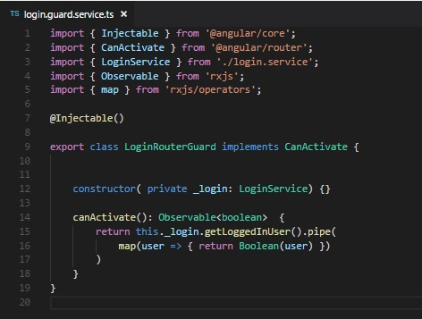
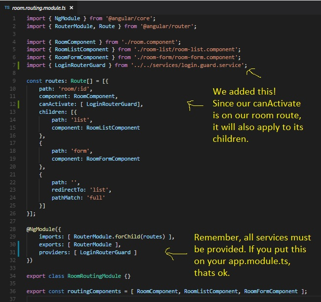

Now that our login is functional, we can start to close off some portions of our application unless someone is logged in. We don't want anyone to be able to visit our room page if they aren't logged in, and there is a tool we can use to accomplish that: A router guard.
As mentioned in the subtitle, our router guard will be a service that we can inject into any of our router modules and force a condition that a user has to pass in order to access that route. Let's create a new file in our services folder called login.guards.service.ts and let's get to building.
First off, we will have quite a few things to import:
Here's how the code of imports look:
import { Injectable } from '@angular/core';
import { CanActivate } from '@angular/router';
import { LoginService } from 'login.service';
import { Observable } from 'rxjs';
import { map } from 'rxjs/operators';
Next will come our injectable decorator to tell Angular that this is really a service:
@Injectable()
Since we are implementing CanActivate, we need to declare as such:
export class LoginRouterGuard implements CanActivate {
}
Our linter is salty because we've said we are going to implement CanActivate, but haven't done so yet. We'll fix that soon.
Next up is injecting our login service so we can get our user info:
constructor( private _login: LoginService ) {}
Now it's time for the meat of our service. We need to utilize a method called canActivate.
canActivate is a method that will return one of three things: A boolean, and observable of a boolean, and a promise of a boolean. I won't go over promises, and a straight boolean won't do us any good since it would only run once and that's it. And observable, however, would suit us just fine.
canActivate(): Observable<boolean> {
}
Now we know that we will need to grab our login info from our login service, but simply returning that won't do us any good. Thats an observable of a firebase.User, and we need a boolean. Therefore, we need to transform that data into a boolean that will tell our router whether or not it's okay to activate that route. Do you remember how we transformed data that we get from an observable? I know you tried to forget, but it's time to use .pipe and map again:
canActivate(): Observable<boolean> {
return this._login.getLoggedInUser().pipe(
map(user => {} )
}
Oof. Let's take this step by step. We start off with a return since we have to return something as stated up top. We call the getLoggedInUser method from our login service. Cool, now we have our login info. We begin the transformation with .pipe, and start our map. We pass in the data as the variable user. If you've been following along, you should know that the user is a type firebase.User, because thats what our login service gave us.
But that's not what we want to finish. We want to make sure that user exists. If there's no user, the result should be undefined, and if the result has data, we're getting an object. If only there was a way to make a boolean based off the existence of that user. Have no fear:
canActivate(): Observable<boolean> {
return this._login.getLoggedInUser().pipe(
map(user => { return Boolean(user) } )
}
Using the Boolean() allows us to apply a similar condition as if we were using this in an if statement. For example if(user) would return true if there was any actual data inside user, and return false if it was a falsy value like undefined or null. And that's exactly what we want.
Now our canActivate returns true if a user is logged in and false if not. Almost there, now we have to apply it. Here's the end result of my router guard:
Since this is a router guard, it would make sense that we would apply this anywhere we are declaring routes that we want to guard. Since we want to block off the room component, we know where our room routes are being handled: room.routing.module.ts. Let's go there.
Go ahead and make a new line inbetween the component and the children properties of our room route; we're going to add something new. If you try to kick in your intellisense, you may find the answer first, but if not, we are looking for canActivate. The result is an array because you can actually apply multiple routing guards if you want. In our case, we're adding just the one we made, and we called it LoginRouterGuard. Your auto-import may kick in if you didn't already import it already.
But we have one more step. Remember that all services need to be provided. Because we are only applying this particular guard to this room routing module, I decided to add to the providers array in our room routing module. If you chose to provide in in your app.module.ts, that's perfectly okay.
Here's what my room rouing module looks like.
But if I go to a room component when I'm logged in and logg of while I'm in the room component, I can still do things while not being logged in. I have circumvented your silly router guard! Hahahaha!
True, so we want to kick someone off the room component if they logoff while being on a room component. Sounds like a topic.. for the next lesson!